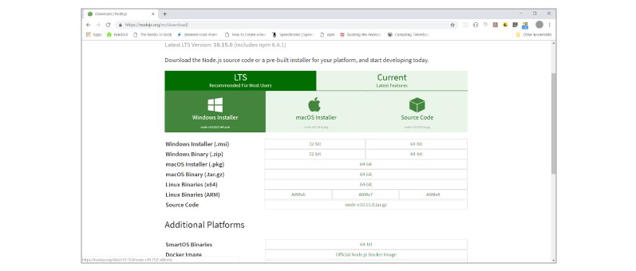
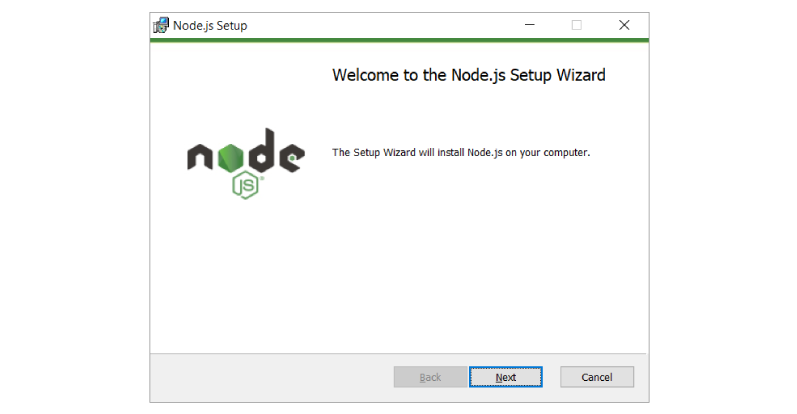
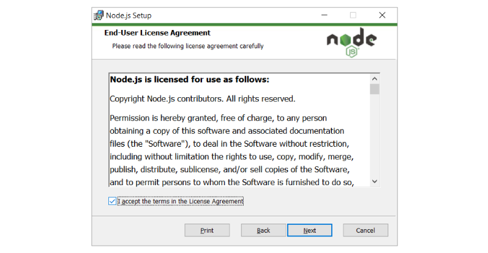
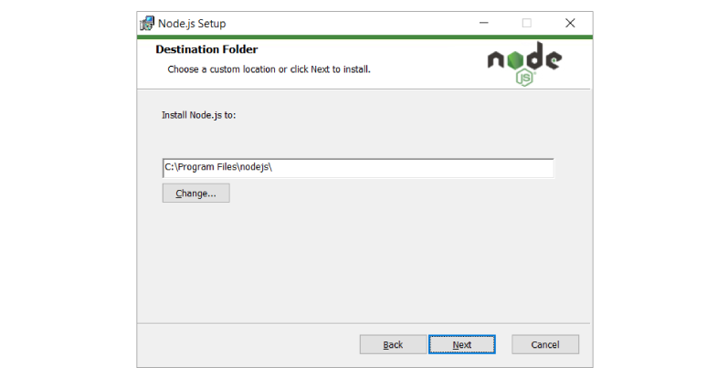
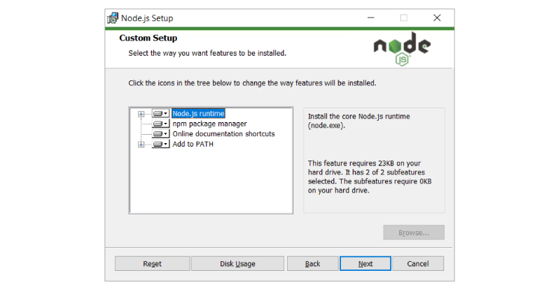
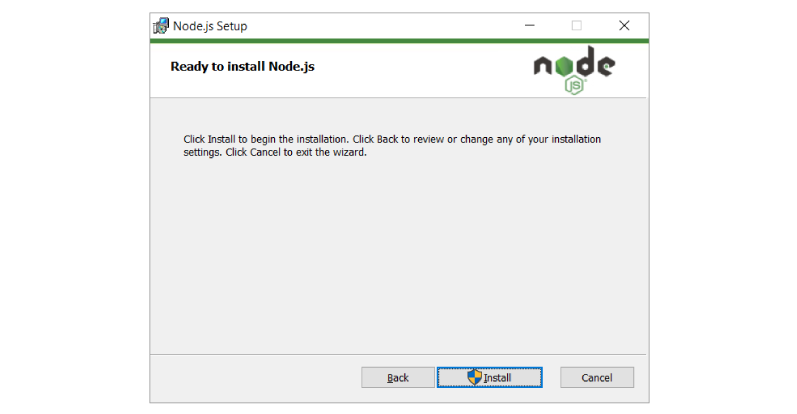
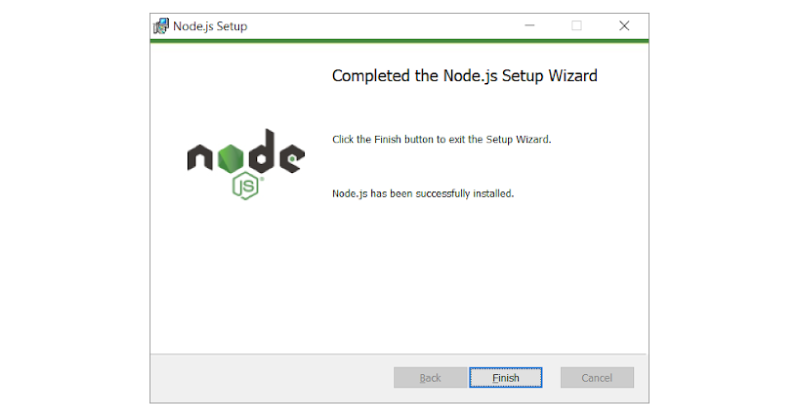

Node.js¶
Installation procedure¶
To install react tooling we need nodejs and npm. First let’s understand what these are and why we need them.
What is Nodejs and Why you need for react development?¶
Node.js is an open-source, cross-platform JavaScript run-time environment that executes JavaScript code outside of a browser. Node.js lets developers use JavaScript to develop wide variety of applications like network applications, command line tools, web api, web applications. You need nodejs for dev tooling (like local web server with live reloading features) and dev experience, you do not need nodejs to run react in production.
What is npm and Why you need for react development?¶
Npm stands for node package manager, it is a dependency management tool for javascript applications. This tool will help to install and the libraries and other tools to support react development. Let’s start with nodejs installation post completion on nodejs we will install create-react-app command line and will create a new react project
Download Node.js¶
The first step is to download the Node.js installer for Windows. Let’s use the latest Long Term Support (LTS) version for Windows and choose the 64-bit version, using the Windows Installer icon.
Visit nodejs download page here;
{kind=link}
Click on windows Installer to download the latest version of node installer.
Install Node.js¶
Click on the downloaded node-vxx.xx.xx.msi (for example node-v10.15.0.msi) in previous step to start the installation which brings up below screen and click Next.
{kind=link}
By clicking next in previous step, you will be asked to accept license, please accept by clicking checkbox and click Next
{kind=link}
Click Next
{kind=link}
Next
{kind=link}
Click Install, this may need elevated permissions, provide necessary rights requested. This step would take several minutes to finish installation.
{kind=link}
And after that click finish
{kind=link}
Testing Installation¶
Open command prompt and run below command to test node:
node -v
{kind=link}
Open command prompt and run below command to test npm:
npm -v
You should see an output like below (Note: Your version may vary depending on your date of installing as nodejs team make an aggressive release but make sure your npm version is >5 )
{kind=link}